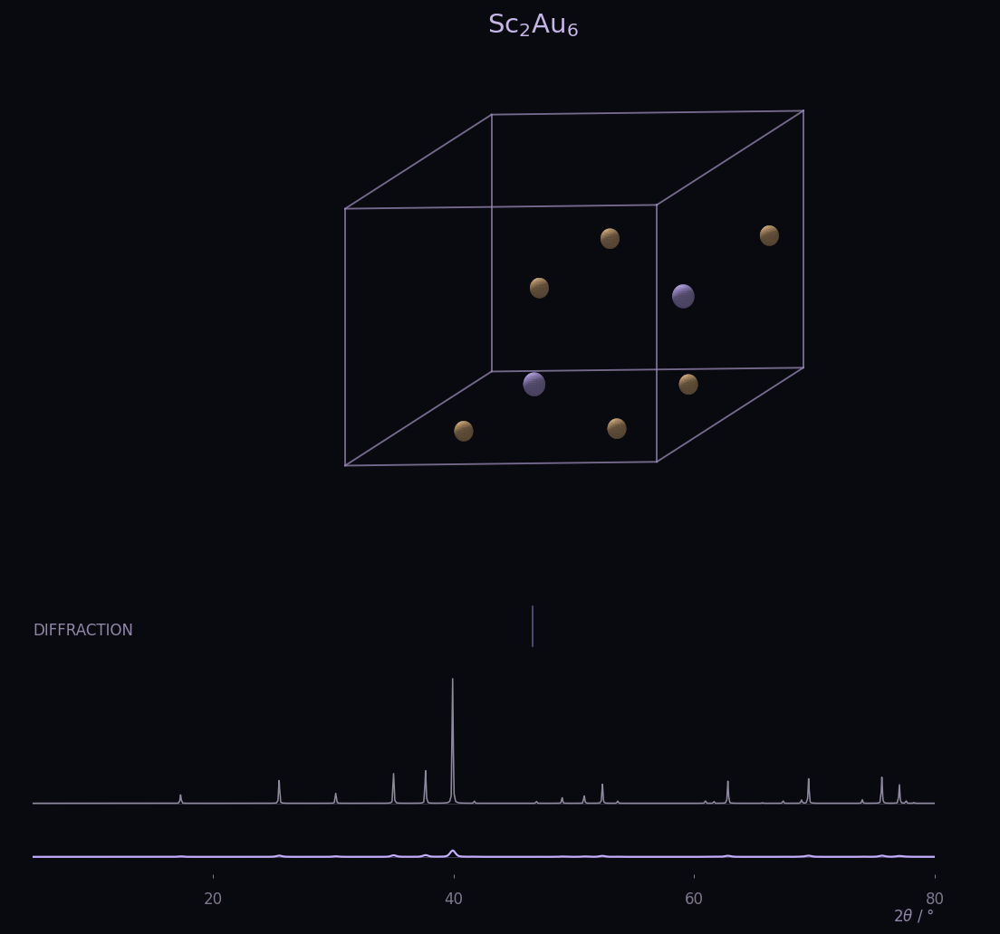
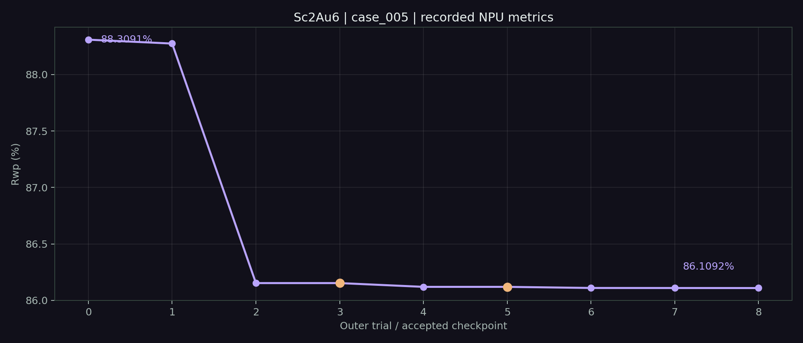

Explain the residual before adding variables
Scale, background, cell, profile and coordinates all influence a diffraction pattern. Opening them in stages lets each trial test a smaller hypothesis, reducing ambiguity from correlated adjustments.
Three roles turn diffraction feedback into the next parameter choice: plan a trial, run numerical optimization and review the result. Follow the fit improving step by step.

01 / CRYSTAL STRUCTURESc · AuFollow successive updates to the background, cell and atomic coordinates, guided by the pattern residual.

Points are accepted checkpoints after each trial. Connecting lines are replay guides, not inner solver steps. Orange points indicate rejected trials.
The Planner proposes a hypothesis, the Executor runs a bounded trial, and the Reviewer checks the result. The numerical gate controls the accepted state.
Scale and background affect overall intensity; the cell affects reflection positions; coordinates affect structure factors. Each trial opens only its selected block.
The current structure and pattern share the same accepted parameters. Structure factors produce a calculated pattern, whose difference from the observed pattern is weighted by the standard deviation to obtain Rwp.
Observed data come from the original XYE. Calculated patterns are replayed with the frozen forward model on CPU float64. Rwp values always come from the original NPU run.
| Parameter | Initial | Current accepted |
|---|
Atom indices start at 0; atom.0 is fixed throughout. Coordinate displacement uses the initial lattice and excludes motion due to cell changes. This case did not open zero or profile.
Numerical optimization determines how to update a chosen block. The loop also decides which variables to open, when to continue and which results to retain.
Scale, background, cell, profile and coordinates all influence a diffraction pattern. Opening them in stages lets each trial test a smaller hypothesis, reducing ambiguity from correlated adjustments.
This run adjusts cell lengths and then tests angles. The angle improvement is too small, so the loop retains the previous state and turns to coordinates. When a repeated block stalls, it moves to other atoms.
In trial 5, the Reviewer suggests acceptance, but Rwp rises by about 1.10×10⁻⁸ percentage points. The numerical gate blocks the suggestion and retains the trial-4 checkpoint, producing a plateau.
| Trial | Parameter block | Trial Rwp / % | Accepted Rwp / % | State decision |
|---|
Trial 3 reduced Rwp by approximately 0.000289 pp but was rejected by the Reviewer. Trial 5 was blocked by the numerical gate. Neither changed the accepted structure.
{kind=link}